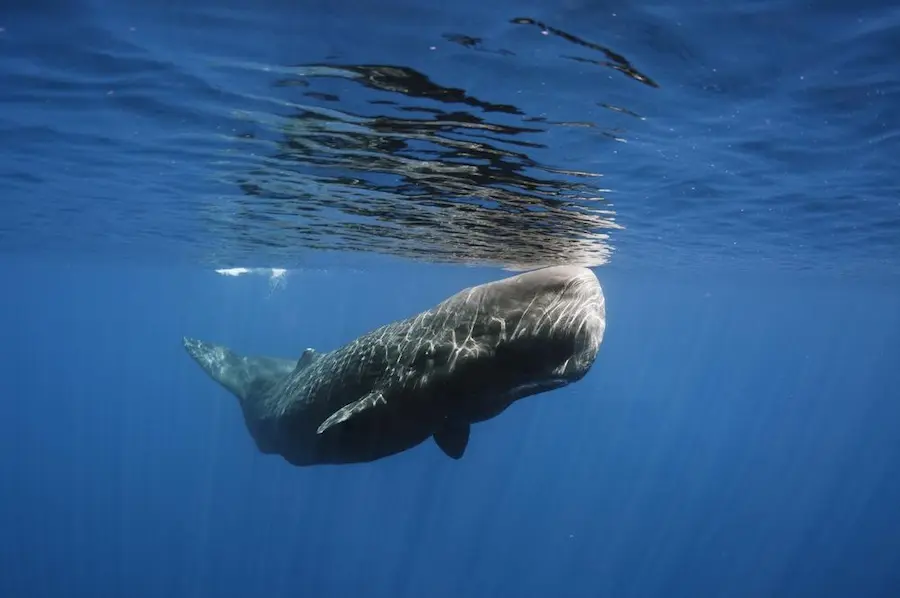
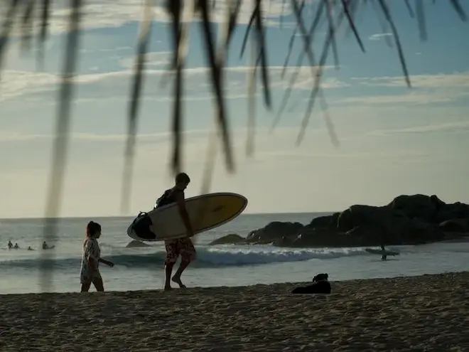
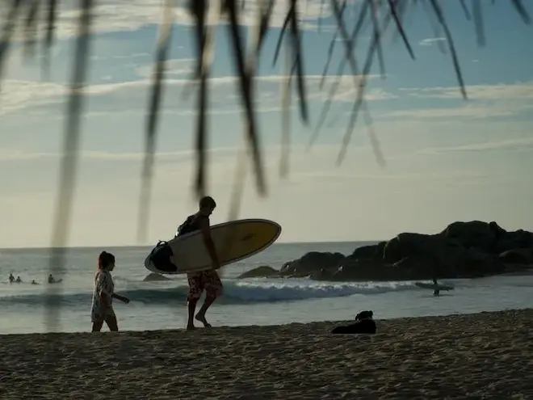

Unawatuna Beach
Located in Galle which is a great city for sightseeing. This is one of the best beaches in Sri Lanka. You will find palm trees around the coast with amazing coral reefs that give a mesmerizing view. Unawatuna is known for having the best beach resorts and has plenty of restaurants all over the coast so if you get hungry, no worries you can go and have some delicious food by the coast! The Galle Fort, a world heritage site which was found and built by the Portuguese is situated close to Unawatuna. You can stay in Hotel Sielendiva located near Unawatuna Beach for a great experience.
Mirissa Beach
Mirissa beach is a beauty located in the southern coast. A small beach town surrounded with palm groves on a hammock which rises behind the beach. You can also engage in whale watching from the coasts of mirissa or take a ship tour to have a close clook at those huge whales swim. You can book a beach villa such as Sri Sharavi Beach Villa to have a beautiful view at the coasts of Mirissa.


Arugambay Beach
Arugambay is situated on the southeast coast which is south of Batticaloa city. Arugambay beach is rated as one of the best surfing destinations in the world. If you love surfing then Arugambay Beach is a must-visit desitnation. Tourists can stay at Bay Vista Hotel, a spectacular hotel which is faces the Arugambay beach, especially surfers would love it with the ease of accessibility it provides.
 
